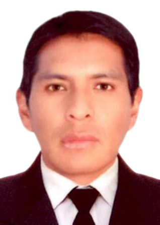
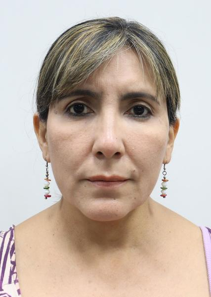
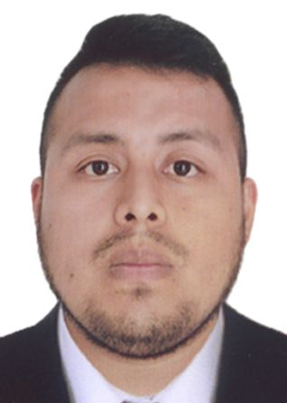
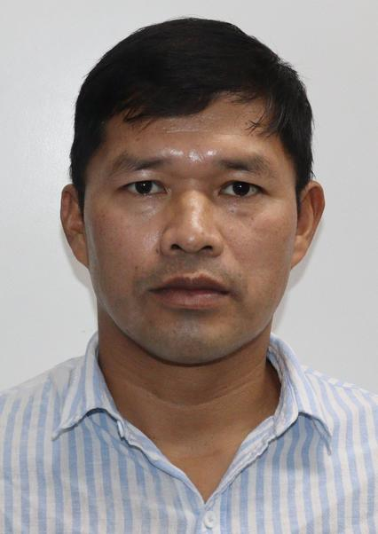
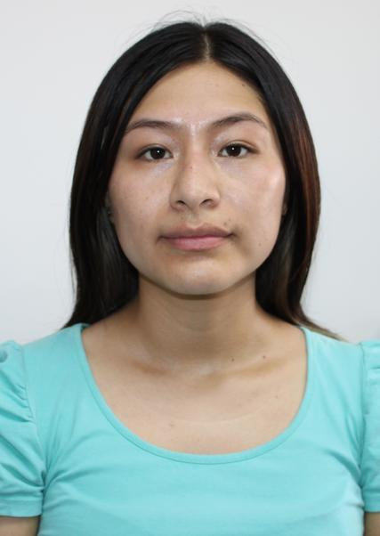
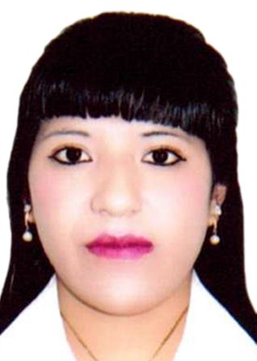
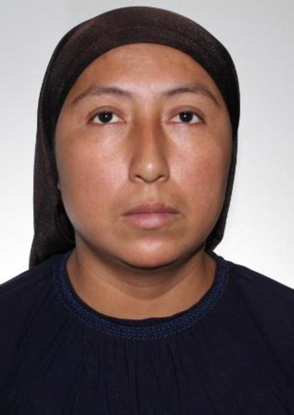
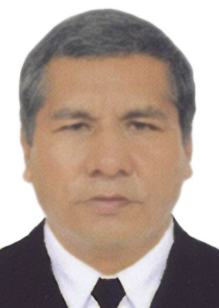
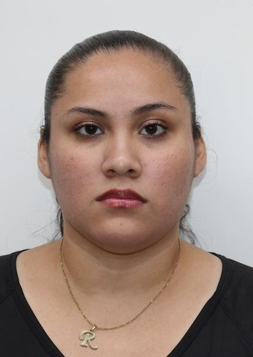
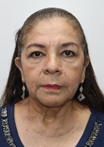
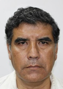
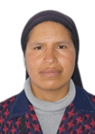
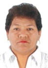

| ORDEN | NOMBRE | PARTIDO | FOTO | CV |
| 1 | SERAFIN PARIONA AUCCASI | PARTIDO DEL BUEN GOBIERNO |  |
Coordinador de centro poblado con experiencia en gestión local y jefatura distrital. |
| 2 | CAROL OLGA SANGUINETTI GUZMAN | PARTIDO MORADO |  |
Administradora y gerente con experiencia en gestión empresarial y administración financiera. |
| 3 | LUIS MIGUEL CERVANTES MALDONADO | LIBERTAD POPULAR |  |
Analista con experiencia en evaluación y procesamiento de información técnica. |
| 4 | ADOLFO CURITIMA RODRIGUEZ | PARTIDO PATRIOTICO DEL PERU |  |
Técnico maquinista con experiencia operativa en maquinaria industrial. |
| 5 | GLADYS KARINA CUBA VARA | PARTIDO CIVICO OBRAS |  |
Auxiliar contable con experiencia en servicios contables y administración financiera. |
| 6 | MADAI MAGNOLIA MERCADO JIMENEZ | PERU LIBRE |  |
Asistente administrativa con experiencia en gestión documental y apoyo institucional. |
| 7 | PAOLA INES QUIÑONES HUAMAN | FRENTE POPULAR AGRICOLA FIA DEL PERU |  |
Profesional vinculada a actividades sociales y organización agrícola. |
| 8 | VICTOR RAUL JIMENEZ HUAYLLA | PERU MODERNO |  |
Consultor en gestión empresarial y asesoría en temas registrales y formación. |
| 9 | REBECA ROSIMAR ESCOBAR FERNANDEZ | PARTIDO DEMOCRATA VERDE |  |
Emprendedora con experiencia en comercialización de productos y ventas. |
| 10 | PAUL PERCY FERNANDEZ BRAVO | JUNTOS POR EL PERU | Técnico con experiencia en asistencia operativa y apoyo administrativo. | |
| 11 | CAROL YBETH RUBIÑOS VIVANCO | PARTIDO PAIS PARA TODOS | Asistente administrativa con experiencia en compras, ventas y gerencia operativa. | |
| 12 | VANIA FLOR CACERES ARONES | PARTIDO DEMOCRATICO SOMOS PERU | Abogada y asesora con experiencia en gestión pública, gerencia y consultoría institucional. | |
| 13 | DYLAN ANTONIO SANCHEZ INCHAUSTEGUI | PARTIDO DEMOCRATA VERDE | Profesional con experiencia en actividades administrativas y operativas. | |
| 14 | DIANA JAQUELINNE MENDOZA RIVAS | LIBERTAD POPULAR | Operaria con experiencia en actividades productivas y apoyo técnico. | |
| 15 | ROXANA CRISTINA GOYTIZOLO LAZO | PARTIDO PATRIOTICO DEL PERU | Jefa de operaciones con experiencia en gestión operativa y administración de procesos. | |
| 16 | YNDRA JUSTINA ALIAGA RUIZ | UN CAMINO DIFERENTE | Profesional con experiencia en gestión social y participación comunitaria. | |
| 17 | MARTHA LILIA RAMIREZ CRUZ DE HUERTAS | PARTIDO MORADO |  |
Contadora y gerente con experiencia en administración financiera y gestión empresarial. |
| 18 | OSWALDO RAFAEL ORDOÑEZ CALMET | PODEMOS PERU | Especialista legal con experiencia en archivo general, asesoría jurídica y gerencia. | |
| 19 | JEAN ALBERTO TENORIO VALENZUELA | PARTIDO PAIS PARA TODOS | Abogado asesor con experiencia en consultoría legal y gestión institucional. | |
| 20 | MANUEL ANTONIO ATO DEL AVELLANAL CARRERA | PRIMERO LA GENTE | Docente con experiencia en formación académica y educación superior. | |
| 21 | OSCAR CIPIRIANO ESPINOZA BARRUETA | PARTIDO PAIS PARA TODOS |  |
Operario y agente de seguridad con experiencia en servicios generales. |
| 22 | GIANCARLOS ALEXANDER NOVOA CASTRO | PARTIDO DEMOCRATA UNIDO PERU | Regidor municipal con experiencia en gestión local y representación pública. | |
| 23 | ROXANA MILAGRO CHANGANA TORIBIO | PARTIDO POLITICO PRIN | Gerente general con experiencia en administración empresarial. | |
| 24 | GEOVANA HUACULLO CCAJALA | FRENTE POPULAR AGRICOLA FIA DEL PERU |  |
Profesional vinculada a actividades agrícolas y desarrollo rural. |
| 25 | SARA MARIBEL GAYOSO BERRIOS | PERU MODERNO |  |
Docente de educación secundaria con experiencia pedagógica. |
| 26 | GIOVANA YATACO MAGALLANES | PARTIDO CIVICO OBRAS | Profesional en control de calidad con experiencia en supervisión de procesos. | |
| 27 | RICARDO ANTONIO TORRES RAMIREZ | PARTIDO MORADO | Gerente con experiencia en administración y dirección empresarial. | |
| 28 | MAALI OLGA BETTY DEL POMAR SAETTONE | RENOVACION POPULAR | |
Consultora y asesora con experiencia en coordinación parlamentaria y gestión pública. |
| 29 | PEDRO MARBELL CASTRO ALVARADO | FUERZA POPULAR | Profesional con experiencia en seguridad y trabajos técnicos en electricidad. | |
| 30 | MARTHA JARA SALDAÑA | PARTIDO POLITICO PRIN | Gerente con experiencia en administración y gestión organizacional. |